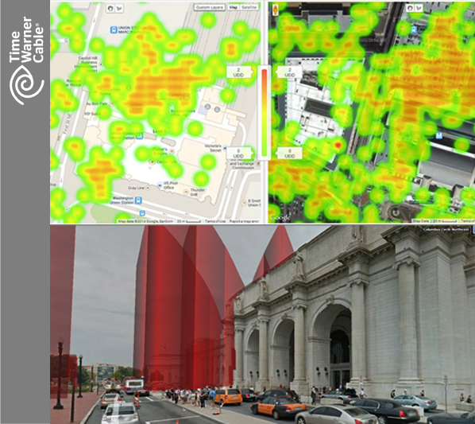

201,620,386
HUNDREDS OF MILLIONS OF WI-FI HOTSPOTS AND COUNTING
User Experience Topology
Visibility into user experience
In the past, deciding where to deploy new Wi-Fi hotspots and small cells has always been a gamble. You must decide, in advance, whether to divert limited resources towards that downtown skyscraper or to that local neighborhood coffee shop. Read more

Intelligent Network Selection
wefi's Intelligent Network Selection
As a MultiScreen or Mobile Network Operator, your job is to ensure consistent mobile coverage for all of the subscribers in your network - no matter where they are or what devices they're using. Read more
Solutions for Content Providers
Transparency into user behavior
Historic user information definitely has value. It allows you to analyze larger trends and make high-level predictions about future expansion efforts. But historic data have relatively little value on a day-to-day basis. In the absence of real-time analytics, you're always a few steps behind user expectations and needs. Read more
Case study

PROFILE
- Time Warner Cable is the second largest MSO in the US, with 14.6M cable subscribers and 9M Internet customers
- A leader in the Cable Wi-Fi consortium of MSOs in the US - owning over 100,000 Wi-Fi networks
NEED
- Attract users to Wi-Fi networks in order to improve experience with content delivery
- Make finding and connecting to Wi-Fi as easy as possible
- A network planning solution - helping to determine where additional access points are required
WEFI PROVIDES
- Prioritized Wi-Fi network scoring and recommendations (map used)
- Network data collection and analytics based on UXT
- API based integration to "My TWC" and "Wi-Fi Finder" applications